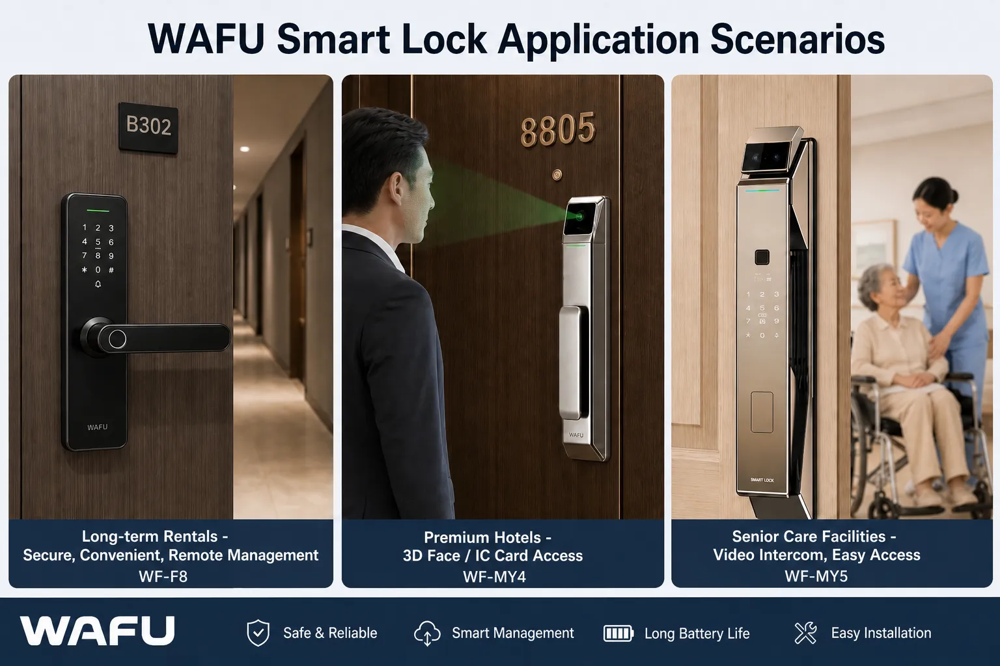

Ao avaliar soluções de fechaduras inteligentes, a seleção do hardware impacta diretamente o sucesso do projeto e a manutenção a longo prazo. Uma estrutura de avaliação modular é a base para uma tomada de decisão racional.
- Esquema de controlo principal (ARM Cortex-M vs. RISC-V): determina o equilíbrio entre as capacidades do algoritmo e o consumo de energia.
- Módulo de comunicação (Wi-Fi 6E vs. NB-IoT vs. Zigbee 3.0): afeta a estabilidade da rede e os custos de integração.
- Estrutura do corpo da fechadura (totalmente automática vs. semiautomática): está relacionada com a vida útil mecânica e a adaptabilidade a diferentes cenários.
A robustez técnica também se reflete em projetos implícitos, como a otimização da compatibilidade eletromagnética da placa de circuito impresso (PCB) e a robustez do firmware em relação às atualizações OTA. Um relatório completo de integridade do sinal e dados de simulação térmica fornecidos pelo fornecedor são mais valiosos do que os parâmetros anunciados.
Análise Detalhada da Arquitetura de Hardware: A Base Técnica para a Integrabilidade e Personalização
A arquitetura de hardware determina a escalabilidade do produto e a sua trajetória de evolução tecnológica a longo prazo. A avaliação deve ir além dos parâmetros superficiais e focar-se na flexibilidade e robustez do projeto subjacente.
Estrutura do Corpo da Fechadura: Considerações Duplas de Segurança e Adaptabilidade Comercial
O design do corpo da fechadura deve equilibrar a segurança e os cenários comerciais. A estrutura inviolável utiliza um acelerómetro ligado ao fecho anti-arrombamento; vibrações anormais acionam um alarme local e enviam os dados para a cloud.
A seleção de materiais requer uma avaliação quantitativa:
- Liga de zinco fundida: adequada para apartamentos de gama média, custando aproximadamente 30% menos que o aço inoxidável 304 e com uma vida útil até 100.000 ciclos.
- Aço inoxidável 304 forjado: destina-se a hotéis de luxo, oferecendo maior resistência à corrosão, mas custando aproximadamente 45% mais do que a liga de zinco.
Módulo de Autenticação de Identidade: Design Flexível que Abrange Múltiplos Cenários
A solução de reconhecimento de impressões digitais segue o princípio da adaptação ao cenário:
- Sensores óticos: funcionam de forma estável em ambientes húmidos (como os balneários de piscinas), com uma taxa de falsos positivos inferior a 0,001%.
- Sensores semicondutores: são 40% mais rápidos do que os sensores óticos em escritórios secos, mas requerem um design antiestático.
Múltiplas estratégias de autenticação requerem personalização:
- Lares de idosos: utilizam "impressão digital + cartão IC".
- Apartamentos para arrendar: utilizam "password temporária + Bluetooth".
- Consultórios: recomendam "impressão digital + reconhecimento facial".
O design modular permite a substituição rápida de sensores no local.
Módulo de Comunicação: A Chave para o Sucesso da Integração do Projeto
O backup de comunicação em modo duplo ou multimodo é padrão para projetos de grande escala:
- Wi-Fi 6E oferece uma gestão remota de elevada largura de banda.
- NB-IoT pode assumir o controlo automaticamente em áreas sem sinal (como estacionamentos subterrâneos), garantindo uma taxa de ligação de 99,9%.
A compatibilidade de protocolos determina os custos de integração:
- O protocolo padrão Zigbee 3.0 oferece uma integração perfeita com as principais plataformas de casas inteligentes.
- Protocolos proprietários podem aumentar o tempo de desenvolvimento em 30% em comparação com os protocolos padrão.
Assim sendo, as equipas de engenharia devem priorizar a avaliação das arquiteturas de sistema existentes; as pilhas de protocolos abertos podem reduzir significativamente os riscos de manutenção a longo prazo.
| Dimensão de Comparação | Vantagens Principais | Cenários Típicos | Riscos de Integração e Notas |
|---|---|---|---|
| ARM Cortex-M (Arquitetura MCU) | Ecossistema maduro, SDK / conjunto de ferramentas rico | Biometria multimodal de fechaduras inteligentes (rosto / impressão digital) | Baixo, sistema de desenvolvimento de suporte completo |
| RISC-V (Arquitetura MCU) | Código aberto e gratuito, baixo custo de licenciamento, arquitetura flexível | Implementação de produção em massa de dispositivos de baixo custo | Médio, o ecossistema da indústria ainda está a melhorar |
| Wi-Fi 6E (Protocolo Sem Fios) | Alta largura de banda, taxa de transmissão rápida, adequado para operação e manutenção remota em alta definição | Gestão remota na nuvem de fechaduras inteligentes de apartamentos / condomínios | Médio, o consumo global de energia é elevado, não sendo favorável ao fornecimento de energia por bateria a longo prazo |
| NB-IoT (Protocolo Sem Fios) | Consumo de energia ultra baixo, ampla cobertura, forte capacidade de penetração na parede | Garagens subterrâneas, corredores, áreas de sinal fraco a longa distância | Baixo, modo de poupança de energia PSM maduro, normalização de módulos |
| Zigbee 3.0 (Protocolo Sem Fios) | Baixo consumo de energia, normas unificadas, rede auto-organizada Mesh, fácil de integrar | Ligação de casa inteligente em toda a casa, ligação em rede de vários dispositivos | Baixo, protocolo de rede maduro, compatível com as principais plataformas |
Gestão de Energia: Uma Consideração Comercial para a Eficiência na Operação e Manutenção
O design "sem substituição da bateria durante 2 anos" é conseguido através da gestão dinâmica do consumo de energia:
- Corrente em modo de espera <15μA.
- Tempo de resposta ao despertar <200ms.
Casos em apartamentos para arrendamento de longa duração na América do Norte mostram que este design pode reduzir os custos anuais de manutenção em aproximadamente 42 dólares por fechadura. A fonte de alimentação de emergência utiliza um supercondensador como backup, suportando 3 desbloqueios de emergência, criando redundância com fechaduras mecânicas. Durante a implementação em lote, a monitorização remota de energia pode fornecer alertas antecipados para a substituição da bateria, evitando efetivamente grandes manutenções pós-venda.
Sistemas de Software: O Valor Oculto do Suporte SDK/API e das Capacidades de Desenvolvimento Secundário
Em cenários B2B, a abertura, a capacidade de personalização e a profundidade dos algoritmos de segurança em software determinam frequentemente a eficiência da implementação do projeto e a experiência final do utilizador.
Algoritmos de Segurança: Da Conformidade à Verificabilidade
Os algoritmos de segurança traduzem os requisitos de conformidade em parâmetros técnicos configuráveis. As políticas de bloqueio por erro de entrada podem ser configuradas através da interface administrativa, incluindo limites e durações de bloqueio:
- Exemplo (apartamento típico): "5 erros, bloqueio de 3 minutos".
- Exemplo (armazém financeiro): "3 erros desencadeiam alarme remoto e bloqueio permanente".
A integração do alarme de coação está em conformidade com a norma europeia EN 14846, fornecendo interfaces API padronizadas (por exemplo, /api/v1/emergency/duress), suportando uma integração perfeita com sistemas de segurança, com uma latência de alarme inferior a 2 segundos.
A Transformação do Valor Operacional dos Algoritmos de Experiência do Utilizador
- Algoritmo de aprendizagem de impressões digitais: emprega tecnologia de atualização adaptativa de modelos. Após a primeira verificação de uma nova impressão digital, o modelo armazenado é otimizado automaticamente, reduzindo em 67% a frequência de redefinições manuais por parte dos administradores devido a problemas com a impressão digital.
- Aprendizagem contínua: o algoritmo aprende continuamente as mudanças nos hábitos de digitação do utilizador (por exemplo, desgaste da impressão digital, humidade/secura sazonal), mantendo uma taxa de falsos negativos inferior a 0,5% e melhorando a velocidade de reconhecimento.
- Gestão em lote: realizada através de uma consola baseada na nuvem — atualizações remotas e diferenciais de firmware podem ser executadas em milhares de fechaduras (poupando 85% da largura de banda); os parâmetros de configuração suportam o envio em grupo e a sincronização completa pode ser concluída em 10 minutos.
Interfaces Abertas e Capacidades de Personalização
O SDK modular suporta a substituição dinâmica de módulos de comunicação: a modificação do ficheiro de configuração COMM_PROTOCOL=ZIGBEE_3.0 permite substituir o módulo Wi-Fi por Zigbee sem reescrever a lógica principal.
A integração de API oferece canais RESTful e WebSocket:
- Os sistemas de gestão de propriedades podem gerar palavras-passe temporárias através de
POST /locks/{id}/temporary-password. - Os sistemas de gestão de propriedades dos hotéis podem receber eventos de estado das fechaduras (registos de abertura de portas, nível da bateria, alarmes) através do WebSocket.
A documentação da interface define claramente o formato de pedido/resposta, o mecanismo de autenticação (OAuth 2.0), o limite de taxa (1000 vezes/minuto) e os códigos de erro; a integração de acordo com esta documentação pode ser concluída em apenas 5 dias-homem.
Conformidade Técnica: Um Passaporte Técnico para o Acesso ao Mercado Global
Requisitos Técnicos para os Mercados Europeu e Americano
Os mercados europeu e americano exigem a conformidade com diversas normas técnicas:
- Normas ANSI/BHMA A156.25: exigem uma vida útil mecânica de 250.000 ciclos para utilização residencial e 500.000 ciclos para utilização comercial.
- Certificação CE/FCC: centra-se na conformidade do módulo de rádio — os módulos Wi-Fi 6E devem passar nos testes de radiação EN 300 328, com uma potência de transmissão limitada a menos de 20 dBm, e cumprir os requisitos de compatibilidade eletromagnética da FCC Parte 15B.
- Requisitos de proteção da privacidade do RGPD: os dados biométricos do utilizador devem ser encriptados e armazenados localmente no MCU (AES-256), sendo apenas os valores de hash transmitidos para a nuvem; a transmissão de dados transfronteiriços deve utilizar canais encriptados TLS 1.3.
Design Adaptativo para a Região Ásia-Pacífico
O mercado da Ásia-Pacífico tem de lidar com diversos desafios ambientais:
- Adaptação ambiental: ambientes de alta temperatura e alta humidade (como no Sudeste Asiático) exigem fechaduras com classificação de proteção IP65, placas de circuito com revestimento conformal (espessura ≥25μm) e conectores com contactos banhados a ouro.
- Adaptação à localização: o Japão exige o cumprimento das normas de resistência ao fogo JIS A 1510 (resistência ao fogo da fechadura ≥30 minutos); a Coreia do Sul exige suporte para protocolos de comunicação normalizados pela TTA (como o Wi-SUN); muitos países do Sudeste Asiático exigem suporte para módulos NB-IoT dual-SIM para permitir a troca automática entre redes de operadores.
O sistema de gestão de energia necessita de ser otimizado para garantir uma taxa de degradação da bateria inferior a 15% num ambiente de 40°C/95% HR.
Cenários de Aplicação Industrial e Soluções Técnicas Correspondentes

Cenário de Apartamentos para Arrendamento de Longa Duração
A solução técnica deve cumprir o requisito de manutenção "2 anos sem necessidade de troca de bateria": corrente de repouso do sistema de gestão de energia <12μA, combinada com comunicação de baixo consumo NB-IoT (PSM modo de ciclo de trabalho de 0,1%), alcançando 24 meses de duração da bateria. Durante a implementação em lote, o emparelhamento rápido de centenas de fechaduras pode ser realizado através da rede Bluetooth Mesh (<30 minutos), e a plataforma na nuvem suporta atualizações remotas de firmware e envio de definições em lote.
Cenários de Hotéis e Escritórios
Cenários de grande tráfego requerem uma solução de fechadura totalmente automática, com testes de vida mecânica superiores a 500.000 ciclos (em conformidade com a norma ANSI/BHMA A156.25 de grau comercial). O acionamento do motor utiliza um controlo em malha fechada, com um tempo de desbloqueio <0,8 segundos e um nível de ruído <45dB.
O sistema de geração de passwords temporárias integra o controlo de acessos: o PMS do hotel gera passwords com um tempo de vida útil limitado (por exemplo, válidas por 4 horas) através de API; em ambientes de escritório, existe suporte para autorização hierárquica (os gestores de departamento podem gerar palavras-passe temporárias para áreas subordinadas).
Para Ambientes de Cuidados a Idosos e Médicos
A função de alarme de emergência requer uma integração padronizada com o sistema médico: após o acionamento do botão SOS integrado na fechadura, um pacote de dados de alarme (incluindo localização, hora e ID da fechadura) é enviado para a plataforma médica através de HTTPS, com um tempo de resposta inferior a 1,5 segundos. A interface de utilizador simplificada utiliza ícones com um tipo de letra grande (≥18pt), suporta orientação por voz e a área de reconhecimento de impressões digitais foi expandida para 150% do tamanho padrão.
Capacidades de Suporte Técnico ODM/OEM
Capacidades de Desenvolvimento Personalizado
A personalização do firmware permite a modificação detalhada de módulos principais, como a lógica de interação, as estratégias de alarme e os protocolos de comunicação. Os clientes podem ajustar o idioma da interface, os limites de mensagens de erro e os mecanismos de religação da rede através de ficheiros de configuração. O ajuste fino do hardware inclui a gravação a laser do logótipo, a correspondência de cores da caixa (com suporte para as tabelas de cores Pantone) e pequenas modificações estruturais (como ajustes na posição dos botões), com um ciclo de entrega de amostras de ≤15 dias úteis.
Suporte para Testes e Certificação
O nosso laboratório próprio realiza testes ambientais (ciclos de temperatura e humidade de -40 °C a 85 °C), testes de EMC e testes de vida útil mecânica (mais de 500.000 ciclos). Podemos auxiliar os clientes na conclusão de pedidos de certificação locais nos mercados-alvo, fornecendo relatórios de pré-teste, modelos de documentos técnicos e canais de contacto com os organismos de certificação, reduzindo o ciclo de certificação em aproximadamente 30%.
Garantia da Cadeia de Abastecimento e Entrega
Os componentes principais (como os chips de controlo principais da NXP e os sensores de impressão digital Goodix) são fornecidos com uma estratégia de stock de segurança de 6 meses. Transição perfeita da produção piloto em pequenos lotes (100 a 500 unidades) para a produção em massa em grande escala (dezenas de milhares de unidades): durante a fase de produção piloto, a verificação do processo e o desenvolvimento dos dispositivos de teste estão concluídos; durante a fase de produção em massa, uma linha de testes automatizada garante uma taxa de aprovação de 99,5% na primeira tentativa.
Sobre a Nossa Força Técnica
A nossa equipa de I&D é composta por mais de 50 engenheiros de hardware, firmware e algoritmos, com membros principais provenientes de empresas como a Huawei e a DJI, possuindo mais de 10 anos de experiência em sistemas embebidos e segurança IoT. Obtivemos a certificação ISO 9001 de sistema de gestão da qualidade e os nossos produtos possuem certificações de conformidade CE, FCC, RoHS e outras, cumprindo as normas de mais de 20 países da Europa, América e região Ásia-Pacífico.
Os nossos clientes abrangem diversos cenários, incluindo hotéis de luxo na Alemanha e apartamentos para aluguer de longa duração no Japão. Por exemplo, ao resolver o problema de integração de um sistema de fechaduras obsoleto numa cadeia hoteleira alemã que não podia ser integrado num PMS (Sistema de Gestão de Propriedades), conseguimos a integração perfeita das fechaduras em milhares de quartos de hóspedes em duas semanas, utilizando APIs personalizadas e protocolos de dados padronizados, permitindo a sincronização do estado dos quartos e a gestão de passwords temporárias.
O nosso laboratório interno está equipado com um conjunto completo de equipamentos para testes ambientais, de compatibilidade eletromagnética (EMC) e de vida útil mecânica, implementando um controlo de qualidade interno 20% mais rigoroso do que os padrões da indústria. A rastreabilidade completa garante fiabilidade e consistência.
Design de Caminhos de Transformação
Concebemos caminhos de transformação completos para clientes B2B, desde a avaliação da tecnologia até à implementação do projeto, fornecendo interfaces técnicas padronizadas e suporte ao processo em cada etapa. Um caminho de execução claro é crucial para garantir o bom andamento do projeto.
Acesso à Documentação Técnica Completa
As especificações técnicas e os white papers utilizam um sistema de documentação estruturado, com suporte para atualizações em tempo real das versões mais recentes da API. As especificações técnicas incluem tabelas de parâmetros de hardware, documentação da interface de software (especificações da API RESTful, bibliotecas de funções do SDK) e relatórios de testes de certificação. Os white papers fornecem princípios de design arquitetónico, detalhes de implementação de algoritmos de segurança e estudos de caso de implementação em larga escala.
Necessidades de Comunicação Técnica
A comunicação da equipa de engenharia utiliza um modelo de seminário técnico com agendamento prévio. Os clientes enviam o âmbito do projeto, os desafios técnicos e os cronogramas através de um formulário online. O sistema liga automaticamente os clientes aos engenheiros (hardware/firmware/cloud) e agenda uma reunião online para a solução técnica no prazo de 48 horas, fornecendo uma solução preliminar e uma matriz de avaliação de riscos.
Exemplos de Aplicação de Testes
São oferecidas aplicações de teste a diferentes níveis:
- Kit de Avaliação: inclui componentes principais, como a placa de controlo principal, o módulo de comunicação e o sensor de impressões digitais para prototipagem rápida.
- Amostra de Engenharia: produto completo de fechadura, com desempenho ao nível da produção em massa.
- Amostra Personalizada: ajuste fino do hardware com base nas necessidades do cliente. O processo de aplicação é padronizado, oferecendo suporte técnico remoto e análise de dados de teste baseada na nuvem.
Consultoria para Colaboração em Projetos
As soluções personalizadas baseiam-se numa análise estruturada de requisitos: após o envio dos documentos de requisitos do projeto pelo cliente, a equipa técnica fornece uma solução técnica, um relatório de avaliação de riscos, um orçamento e um plano de entrega no prazo de 72 horas. O sistema de gestão de projetos suporta o rastreio de requisitos e, para projetos complexos, podem ser oferecidas visitas técnicas presenciais e workshops de design conjunto.
A concretização do valor da tecnologia das fechaduras inteligentes depende, em última análise, da eficiência na transição do conhecimento técnico para a implementação do projeto. Estamos empenhados em fornecer soluções sistemáticas baseadas num profundo conhecimento técnico e prática de engenharia. Aguardamos com expectativa a oportunidade de colaborar com a sua equipa técnica para impulsionar aplicações inovadoras de fechaduras inteligentes em mais cenários de negócio.